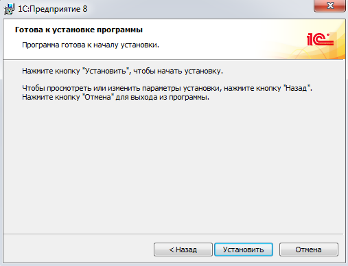
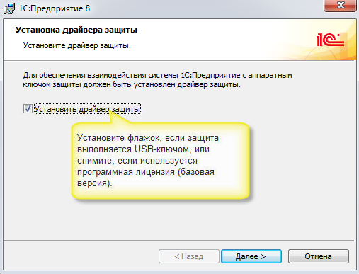

Скачайте дистрибутив последней версии платформы с сайта поддержки пользователей по указанному адресу https://releases.1c.eu/project/Platform83
Укажите имя пользователя и пароль, зарегистрированные на сайте поддержки пользователей: https://portal.1c.eu/
Для скачивания файла перейдите в раздел «Технологическая платформа для Windows»:

Сохраните файл на диск, запомните папку, в которую его сохранили:

Обратите внимание: для установки программы пользователь Windows должен обладать правами администратора! Распакуйте загруженный файл с архивом. В папке, в которую распаковали архив, найдите и запустите файл Setup.exe:

Далее следуйте инструкциям программы – установщика:






Определите и откройте каталог, в котором находится нужная база данных: